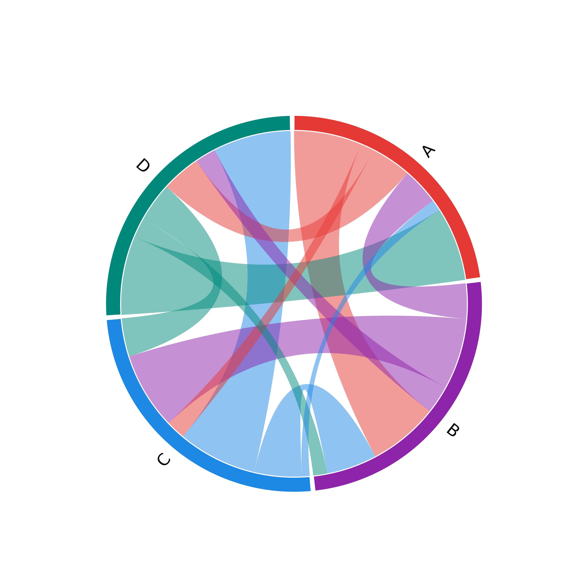
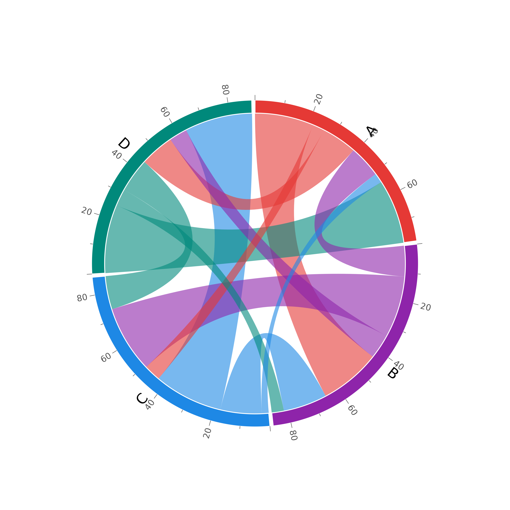
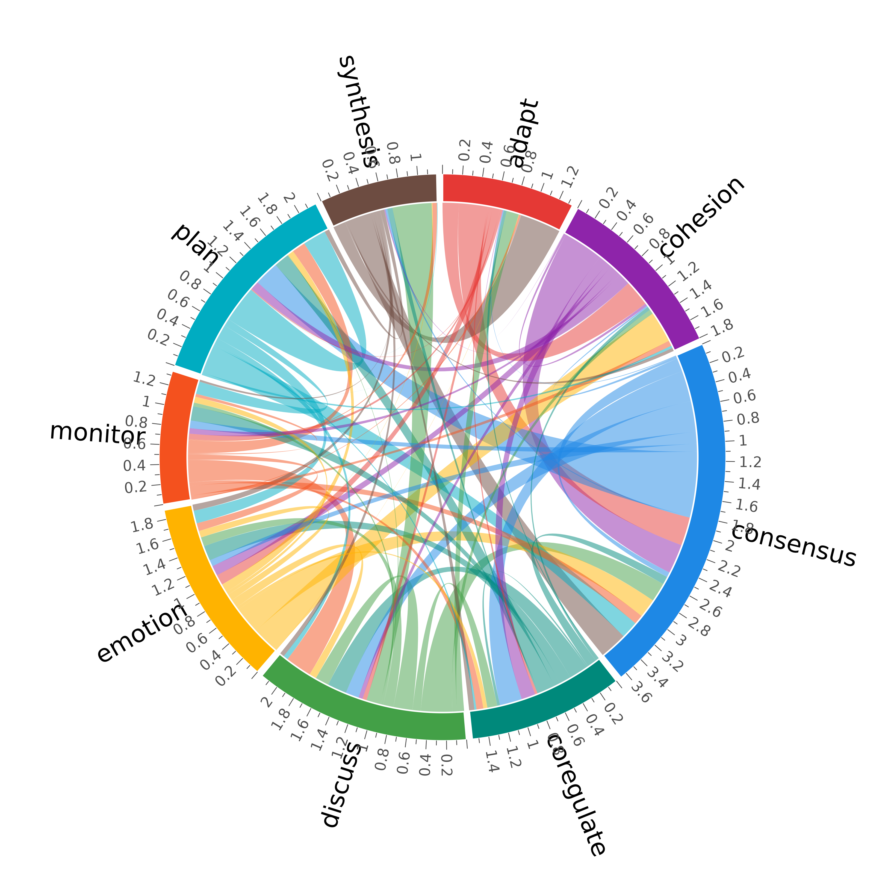

Draw a chord diagram where nodes are arcs on the outer ring and edges are curved ribbons (chords) connecting them. Arc size is proportional to total flow through each node and chord width is proportional to edge weight.
Usage
plot_chord(
x,
directed = NULL,
segment_colors = NULL,
segment_border_color = "white",
segment_border_width = 1,
segment_pad = 0.02,
segment_width = 0.08,
chord_color_by = "source",
chord_alpha = 0.5,
chord_border = NA,
self_loop = TRUE,
labels = NULL,
label_size = 1,
label_color = "black",
label_offset = 0.05,
label_threshold = 0,
threshold = 0,
ticks = FALSE,
tick_interval = NULL,
tick_labels = TRUE,
tick_size = 0.6,
tick_color = "grey30",
start_angle = pi/2,
clockwise = TRUE,
title = NULL,
title_size = 1.2,
background = NULL,
...
)Arguments
- x
A weight matrix,
cograph_network,tna, origraphobject.- directed
Logical. If
NULL(default), auto-detected from matrix symmetry.- segment_colors
Colors for the outer ring segments.
NULLuses a built-in vibrant palette.- segment_border_color
Border color for segments.
- segment_border_width
Border width for segments.
- segment_pad
Gap between segments in radians.
- segment_width
Radial thickness of the outer ring as a fraction of the radius.
- chord_color_by
How to color chords:
"source"(default),"target", or a color vector of length matching the number of non-zero edges.- chord_alpha
Alpha transparency for chords.
- chord_border
Border color for chords.
NAfor no border.- self_loop
Logical. Show self-loop chords?
- labels
Node labels.
NULLuses row names,FALSEsuppresses labels.- label_size
Text size multiplier for labels.
- label_color
Color for labels.
- label_offset
Radial offset of labels beyond the outer ring.
- label_threshold
Hide labels for nodes whose flow fraction is below this value.
- threshold
Minimum absolute weight to show a chord.
- ticks
Logical. Draw tick marks along the outer ring to indicate magnitude?
- tick_interval
Spacing between ticks in the same units as the weight matrix.
NULL(default) auto-selects a nice interval.- tick_labels
Logical. Show numeric labels at major ticks?
- tick_size
Text size multiplier for tick labels.
- tick_color
Color for tick marks and labels.
- start_angle
Starting angle in radians (default
pi/2, top).- clockwise
Logical. Lay out segments clockwise?
- title
Optional plot title.
- title_size
Text size multiplier for the title.
- background
Background color for the plot.
NULL(default) uses the current device background.- ...
Additional arguments (currently ignored).
Value
Invisibly returns a list with components segments (data frame
of segment angles and flows) and chords (data frame of chord
endpoints and weights).
Details
The diagram is drawn entirely with base R graphics using polygon()
for segments and chords, and bezier_points() for the curved ribbons.
For directed networks, each segment is split into an outgoing half and an incoming half so that chords attach to the correct side. For undirected networks each edge is drawn once and the full segment arc is shared.
Examples
# Weighted directed matrix
mat <- matrix(c(
0, 25, 5, 15,
10, 0, 20, 8,
3, 18, 0, 30,
20, 5, 10, 0
), 4, 4, byrow = TRUE,
dimnames = list(c("A", "B", "C", "D"), c("A", "B", "C", "D")))
plot_chord(mat)

plot_chord(mat, chord_alpha = 0.6, ticks = TRUE)

if (requireNamespace("tna", quietly = TRUE)) {
# TNA transition network
model <- tna::tna(tna::group_regulation)
plot_chord(model, ticks = TRUE, segment_width = 0.10)
}
